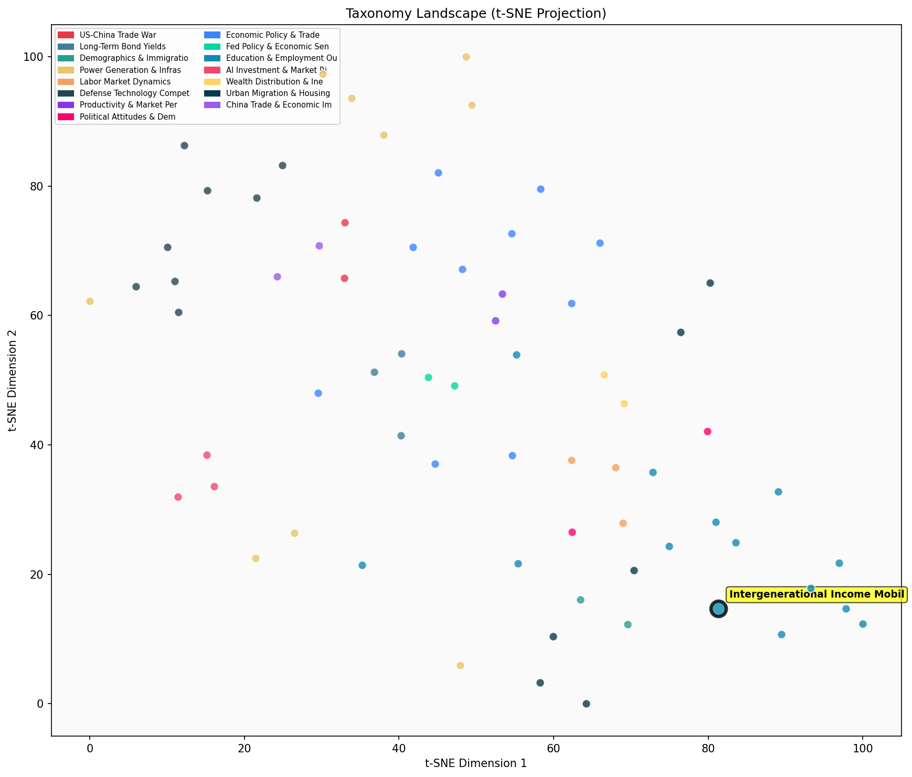

Description
This subcluster examines how economic outcomes transmit across generations, focusing on intergenerational income mobility patterns and long-term economic prospects. Articles analyze multi-generational datasets spanning decades to centuries, tracking wealth persistence and mobility rates between parents and children. Research draws from longitudinal surveys like PSID and GSS, cross-national comparative studies, and historical records. Key themes include geographic influences on mobility, policy interventions affecting economic trajectories, and genetic factors in income outcomes. Unlike sibling subclusters that focus on immediate educational performance or current labor market conditions, this area specifically investigates the persistence or disruption of economic advantage across family lineages and generational wealth transmission mechanisms.
Similarity to All 70 Subclusters
Each cell represents a subcluster. Color intensity shows similarity (blue=low, red=high). Black line marks current subcluster position.
Relationship to Primary Clusters
Average similarity to each of the 15 primary clusters. Larger area = stronger relationship to that cluster.
Taxonomy Landscape
All 70 subclusters positioned by similarity (t-SNE). Current subcluster highlighted with label. Click to enlarge.
Network Connections
Current subcluster at center, connected to related subclusters. Line thickness = similarity strength.
Most Representative Articles
-
1. .@swinshi argues that 72% of 40-year-olds exceed their parents' family income excluding government b
-
2. Children entering labor market today have same chances of moving up income distribution relative to
-
3. Estimating evolving expectations of lifetime resources over 40 years of Danish data, @r_landersoe fi
-
4. US absolute income mobility has declined significantly since 1940, with children earning more than t
-
5. Children who grew up in counties with higher employment rates had more economic mobility than peers
Edge Cases (Boundary Articles)
-
1. Dynastic persistence of ultra-high wealth in the US was limited even in periods of high inequality lThis article is borderline because while it does examine intergenerational wealth transmission (a key aspect of economic mobility), it focuses specifically on the ultra-wealthy top 1% rather than broader population mobility patterns that typically define intergenerational income mobility studies. The content is more aligned with wealth concentration dynamics among the highest earners, which explains why it shows higher similarity to the "Top Percentile Wealth Concentration Trends" cluster.
-
2. Btw 1996 and 2024, geographic mobility as measured by interstate migration declined for all age grouThis article is borderline because while it mentions economic factors affecting mobility patterns, it focuses on geographic/interstate migration rather than intergenerational income mobility or how economic outcomes transmit across generations. The content is more about demographic and residential mobility trends driven by household composition changes (dual-earning couples) rather than the transmission of economic status between parents and children that defines the assigned cluster.
-
3. A study analyzing data from 30 European countries reveals that individual downward social mobility dThis article is borderline because while it mentions upward and downward mobility rates, its primary focus is on how these mobility patterns influence attitudes toward immigrants rather than examining the mechanisms of intergenerational income transmission or long-term economic prospects across generations. The study treats mobility as a contextual factor affecting social attitudes rather than analyzing mobility patterns themselves or their economic determinants.
Original Dendrogram